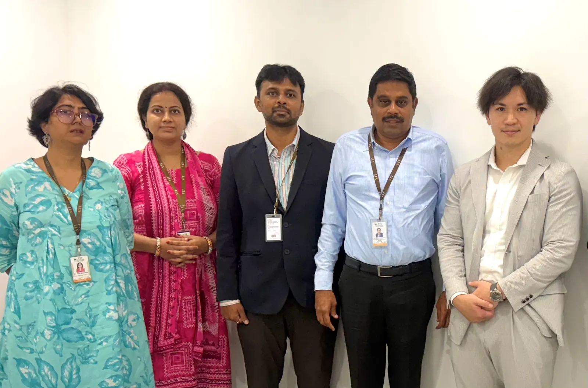

FAQ
インド人新卒の採用に
関するよくある質問
日本語レベル、在留資格、インターンの受け入れ、費用、入社後の定着、GCC設立支援まで。インド人新卒の採用を検討する段階で多いご質問に、検討の順番でお答えします。

About
採用を考えたときに出てくる疑問に、
検討の順番でお答えします。
どんな学生がいるのか。面接だけで決めてよいのか。日本語や在留資格はどうするのか。費用はどのくらいかかるのか。インド人新卒の採用を考えはじめると、疑問は順番に出てきます。
このページでは、ご相談の中で多いご質問を、検討が進む順に並べました。気になるところから読んでいただけます。
Questions
検討の順番に、
24の質問にお答えします。
- 24問採用を考えたときに出てくる疑問
- 7つサービス・人材・インターン・日本語と在留資格・受け入れ・費用・GCC
Service
まず、〇〇〇〇について
最初に多いのは、どこまで任せられるのか、外国人の採用が初めてでも使えるのか、というご質問です。運営は〇〇〇〇株式会社です。
〇〇〇〇とはどんなサービスですか？
〇〇〇〇（〇〇〇〇）は、インドの理系大学の学生を発掘し、インターンでの見極めと入社前トレーニングを経て、日本企業への新卒入社につなげる採用支援サービスです。運営は〇〇〇〇株式会社です。
どこまで任せられますか？
採用条件の整理、インドの大学での候補者の発掘と提案、面接の調整、インターンの受け入れ調整、内定者向けの日本語と職場文化の研修までを、一つの流れで支援します。面接や評価、内定の判断、雇用契約は企業で行っていただきます。在留資格の手続きや生活の立ち上げで支援する範囲は、相談の際にご説明します。要確認：在留資格・生活の立ち上げ・インターン期間中と入社後のフォローの担当範囲
外国人を採用したことがなくても利用できますか？
外国人社員の受け入れが初めての企業からのご相談もお受けしています。日本人マネージャー向けの研修もあり、受け入れの準備を一緒に進められます。
どうやって相談すればよいですか？
お問い合わせページから、無料相談をご予約いただけます。採用条件の整理から、オンラインでご相談いただけます。自社に合うかを先に確かめたい場合は、10問・約2分の採用診断もご利用ください。
Talent
どんな学生と出会えるのか
〇〇〇〇がご提案するのは、インド工科大学（IIT）に限らず、インド各地の理系大学で、機械・電気電子・情報・化学などを学ぶ新卒の学生です。
どの大学の学生を紹介してもらえますか？
インド工科大学（IIT）に限らず、インド各地の理系大学の学生が対象です。専門分野に強い理系大学からも候補者を探します。要入力：公開できる連携大学の一覧
どんな専攻・スキルの学生がいますか？
機械、電気電子、情報、化学・材料などの理系専攻の学生です。SAP・AWS・CAD・AUTOSARなどのツールや、EV・脱炭素などのテーマに強い人材もいます。要確認：専攻の範囲専攻別の学びと配属例は「インド理系人材のスキル」のページで紹介しています。
なぜインドの理系人材なのですか？
インドは高等教育の規模が大きく、理工・IT系を学ぶ学生の割合も日本より高い国です。理工系の授業や資料の多くは英語で、ツールも英語のまま使いこなします。日本の安全さや技術力に関心を持ち、日本で働きたいと考える学生も増えています。
Internship
面接だけで決めずに、
一緒に働いて確かめる
〇〇〇〇のインターンは、複数の大学から複数名の学生を受け入れ、一緒に働きながら技術力や職場との相性を確かめたうえで、採用したい学生に内定を出せる仕組みです。
入社前のインターンでは何ができますか？
採用前に候補者と一緒に働く期間を設け、技術力や仕事への姿勢、職場との相性を企業と候補者の双方が確かめられます。複数名を横並びで比較したうえで内定を判断できるため、入社後のミスマッチを減らす取り組みになります。
インターンの学生は来日しますか？
基本は、インドからフルリモートで勤務します。来日してのインターンをご希望の場合はご相談ください。
インターンの期間はどのくらいですか？
1〜3か月です。比較のため、2名以上の受け入れをおすすめしています。受け入れの調整は〇〇〇〇が行います。期間中の連絡体制は、ご相談の際にご案内します。要確認：期間中の〇〇〇〇のフォローの有無・範囲と連絡体制
インターン後に採用しなくてもよいですか？
採用したい人材がいなければ、見送ることもできます。学生にとっても、日本企業でのインターンは次の機会に生かせる経験になります。要確認：見送った場合の費用の扱い
Japanese & Visa
日本語と在留資格は、
どう準備するのか
日本語のレベルには個人差があり、内定から入社までの研修で日本語を学びます。要確認：インターン時点の日本語レベルの目安（現サイトでは「そこそこ」）日本で働くには、仕事の内容に合った在留資格の手続きが必要です。
候補者の日本語レベルはどのくらいですか？
日本語のレベルには個人差があります。要確認：インターン時点の日本語レベルの目安（現サイトでは「そこそこ」）内定から入社までの期間に日本語の研修を行います。大学の中で日本語教育を行う大学もあり、在学中にN2〜N3相当の学生がいる大学もあります。業務で必要な日本語のレベルは、相談の段階で一緒に整理します。
入社時点でどのくらい日本語が話せますか？
個人差があります。入社前に日本語研修を行い、入社時点の目安は、ご相談の際にすり合わせます。要入力：入社時点の目安（N◯程度）と、目安を定めているか業務で使う専門用語は、入社後のOJTとあわせて身につけていく前提でご相談ください。
在留資格は何が必要ですか？
外国籍の新卒が日本の企業で働くには、仕事の内容に合った在留資格が必要です。理系の専門知識を生かして技術職として働く場合は、「技術・人文知識・国際業務」が検討されることが一般的です。実際の要件は学歴や職務の内容によって異なります。要確認：行政書士の監修
在留資格の手続きは誰が行いますか？
雇用契約の締結と申請書類の準備は、雇用する企業で行っていただきます。〇〇〇〇が支援する範囲は、相談の際にご説明します。要確認：申請サポートの範囲
Onboarding
迎える準備と、入社後の定着
入社前のインターンとトレーニングで相互理解を深め、日本人マネージャーも研修で準備することが、受け入れと定着につなげる取り組みになります。
受け入れる前に、社内で何を準備すればよいですか？
任せる業務と必要な日本語のレベル、受け入れ部署と相談役（メンター）、住まいや生活の立ち上げの分担、社内ルールの共有の4つを、早めに決めておくと安心です。準備の進め方は無料相談でご相談いただけます。
日本人の管理職向けの研修はありますか？
日本人マネージャー向けの海外人材マネジメント研修と、学生との合同研修を行っています。合同研修では、実際の仕事の場面を使った演習や、ゲーム形式の研修などを、日本とインドの両方で行えます。要確認：マネージャー研修のみの受講の可否と費用
入社後に定着するか不安です。
入社前のインターンとトレーニングで相互理解を深めておくことが、定着につなげる取り組みになります。複数名が同じ時期に入社すると、相談し合える仲間がいる環境もつくりやすくなります。入社後のフォローについても、ご相談ください。要確認：入社後フォローの担当範囲
Cost
費用と、採用までの期間
料金は採用人数やインターンの形式によって異なり、内定者向けのトレーニングは無料です。要確認：無料の条件採用までの期間は、採用時期や在留資格の手続きによって変わります。
インド人を採用する費用はいくらですか？
料金は、採用人数やインターンの形式、ご依頼いただくサービスの範囲によって異なります。〇〇〇〇の料金のほかに、渡航費や住まいなどの費用が発生する場合があります。無料相談で条件をお伺いしたうえで、お見積もりをご提示します。要入力：料金の公開方針
トレーニングの費用はかかりますか？
内定者向けの日本語と職場文化のトレーニングは無料で提供しています。要確認：無料の条件
採用までに何か月かかりますか？
採用したい時期や候補者の卒業時期、在留資格の手続きによって変わります。在留資格の手続きと入社前トレーニングに一定の期間がかかるため、採用まで3か月以内の場合は難しいことがあります。採用したい時期から逆算して、早めに始めることをおすすめします。要入力：標準的な期間
GCC
その先に、インドの拠点づくりも
GCC（グローバル・ケイパビリティ・センター）は、企業が海外に設ける自社運営の拠点です。〇〇〇〇は、インドでのGCC・現地法人の設立を、目的の整理から組織運営の設計まで支援しています。
インドにGCC（現地拠点）を設立する支援もありますか？
あります。目的とKPIの設定、拠点の機能とオペレーション、場所の選定、設立、組織運営とガバナンスの設計まで、全工程で支援しています。
インドのどの都市に対応していますか？
デリー、プネ、チェンナイ、バンガロールなどの主要都市に対応しています。
採用した人材を、将来インドの拠点で生かせますか？
日本で経験を積んだ人材が、将来インド拠点との橋渡し役になることも考えられます。配属は本人の希望や雇用契約の内容によって変わるため、採用の段階から将来の役割について本人と話し合っておくことが大切です。
Contact
答えが見つからないときは
ここにないご質問は、無料相談やお問い合わせでお気軽にお聞かせください。